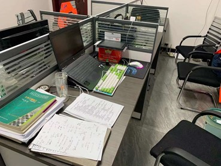
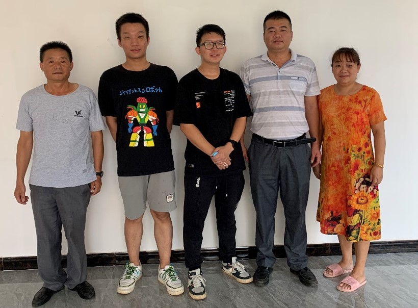
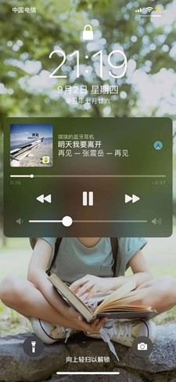

暑期实习日志
本文最后更新于：4 分钟前
6月26日从南昌工程出发，来到赣江旁边的山沟沟里。现在9月2日，学校开学，明天我就要离开。感觉经历的越多我就越容易多愁善感，相比于校园生活和之前参加的夏令营等活动，来到中铁二十四局实习与已经工作多年的人相处和共事，对我来说是非常新鲜和奇妙的一段经历。在这段时间，我打着实习的幌子，在这白吃白喝，无所事事，就在项目部插科打诨。要走了，还是把这段记忆记录下来，铭记两个月来朝夕相处的伙伴们。
我们项目部在南昌县的西侧，赣江边上，受县城投之托，完成两段G105国道断头连接项目。由于项目下穿铁路桥，架设桥下板桩桥，设计可能十分复杂。我刚到项目部的那天，经理和我说图纸大概在7月10日出来，直到今天9月2日，图纸依然在铁路局图审…
我刚到项目部时，项目部的全部成员有8个人；今天晚上，我写这篇回忆录时，项目部有7个人（都包括我自己）。
肖长柏经理是我们这个项目的和双港项目的总经理（图6右二），也是南昌工程的校友（果然），他平时神龙见首不见尾，一般是有事情，或者和公司或业主或南铁天河的人聚餐才会过来。每次见到肖经理，他都满脸慈祥和我说话，昨天来的时候还邀请我开学了去双港的项目部蹭饭（狗头）。吴昊书记（图一）是我们项目办的书记（虽然我到现在都没搞明白具体工作是啥），也是我的邻居。
我们项目在附近租了两套民居作为住所，我所在的房间是两室一厅，其中一间住了我和简涛副经理，另一间住的吴书记。我的宿舍内貌如图1所示。吴书记是一个非常文质彬彬的人，如图2所示，除了某天晚上我背单词的时候他问我virgin和masturbate是啥意思之外…吴书记很少呆在项目部，大部分的时间都在到处跑，住在一起的次数也十分少。每次吴书记回到项目部住的时候，都会给我们带瓜，西瓜或是哈密瓜，我妥妥的一号吃瓜群众。简涛经理是我们项目部的副经理也是我的室友，他常驻项目部负责这个项目的日常事务，如图4所示。我第一天刚到项目部时，是简经理接待的我，帮我买好垫子被子等日常用品，然后带我和中熊去另一间出租屋搬个小折叠床到他寝室。简经理喜欢调侃我，每次见我吹牛的时候都要拆我的台（哪有这样的老板【哭】）。他结婚了有两个小宝宝，每天晚上都看到他和妻子打视频电话，还说宝宝不乖我就不给你买挖掘机了…我在办公室的工位和简经理相邻（如图3所示），每天不是在写论文就是在看动漫，就在经理眼皮子底下，灯下黑（坏笑）。有几天食堂做饭的阿姨去公司旅行了，某天晚上经理给我们买华莱士外卖，外卖送到了发现量特别少（三人份的！），经理看着我不忍心借口尿遁溜了，于是全都是我的了…今天晚上我送查杭去开学回来项目部九点了，正好今天晚上吴书记和简经理要去公司公事，他们一直等我回来见我最后一面，感动。

项目部不得不说的人还有一位方向工程部长，高高的发际线和闪亮的眼镜镜片无不显示出他是一位十分有技术水平的部长，同时他考的三个一建证书和一个一级注册造价证书也彰显着他在我们工程领域的实力与地位。方部长的生活十分完美，30岁赚到了房子车子，找了高中老师做女朋友。他是我实习过程中的导师，也是我在生活中需要学习的对象。临走时因为他不大舒服，就没合到合影，他今年下半年或明年可能结婚，我强烈要求叫我去做伴郎，不知道他会不会忘记。
我刚来项目的时候有一位工作了一年的大学生，姓熊，简称中熊，如图5所示。（因为后来南铁天河来了位施工员也姓熊，简称大熊；今年二十四局新招了一个大学生，还姓熊，简称小熊）中熊高高瘦瘦，处处表现出成熟的感觉。他最近在学吹口琴，巧了我那时最近也在学吹口琴，于是我们就商量着赶在实习结束之前看能否排出一个口琴二重奏出来，不巧的是没过多久小熊就被调到九江的项目部去了，直到我临走也没回来。

八月份的时候，公司调了一位刚校招的大学生来到我们项目部，就是上文中的小熊。图6左二。看起来十分呆萌呆萌的（内秀），他的人际关系非常好，刚来的时候过生日，生日礼物快递连续收了一个礼拜！我会向他请教交友攻略，至今奉为圭臬。
任大队长是我们项目部的施工技术担当，管理分包下属作业队的所有施工事项，如图6左一所示。他不苟言笑（一本正经的胡说八道），真真假假虚虚实实，感觉说的每句话都充满着人生智慧。我们在一块喝过几次酒，但自从某次喝吐了之后我就改喝苏打水了，项目上的苏打水被我喝掉了好多。他会给我讲解应酬的注意要点，喝酒的正确姿势，虽然忘得差不多了，但是我还是会铭记在心。任队喜欢斗地主，但好像牌技一般，只做消遣。
食堂阿姨是我们项目部的厨艺担当，是任队的老婆，也特别和善（图6右一）。有几次早上睡过头了，过了七点五十的饭点，阿姨还是会给我做早饭。阿姨做的饭菜特别好吃，我最喜欢红烧牛腩和蛋炒饭。在某个风雨交加的晚上，项目部的所有人都到双港去公事，只有我和阿姨留守，然后阿姨就给我炒了个蛋炒饭，比南昌工程食堂卖的蛋炒饭还香~~~。阿姨知道我喜欢吃青菜和牛肉后，几乎每顿饭的青菜都加量。在我即将开学的最后几天，安排了好几顿牛肉给我们吃，过足了牛肉瘾。阿姨也喜欢打羽毛球，我们晚上吃完饭打过几次，技术挺厉害的，简经理打不过她（偷笑）。某天因为我原来的电脑键盘摔坏了，就换了一个新的键盘，阿姨就调侃我说把坏键盘送给任队，这样他晚上就可以跪着，然后任队双眼一瞪使出瞳中剑，戳得我透心凉。
我们项目的人大概就介绍完了，实习不长不短两个月，一直都没有开工。因此实习就变成了办公室抖腿，为了使自己抖腿抖得心安理得，就在暑假期间做了两篇论文。首先是青岛的国际会议，准备做了一个presentation，会议7月24日结束。那应该是我最后一次做图像识别技术相关的事情了，接下来我打算好好学习，跟着丁海滨老师冲击科学的巅峰。7月23日，丁海滨老师让我看一下万励学姐的论文，我写了一个论文总结。老师说写的还不错，让我写写综述试试，于是我就开始看文献。从结束会议之后开始准备。8月1日开始工作，几乎每天早八晚十，直到16日完成初稿，文档至今仍在修改，希望能给我的研究生生涯开旅程开一个好头。在做综述期间，论文看到吐，于是打印出来看，做完这篇论文时，白嫖项目部打印纸两本书一样厚…

两个月的实习生活最让我影响深刻的有一件事，就是某天县委书记来视察工地，我们整个项目部的人临时清场，做广告牌。第二天，中午气温十分高，我们所有人冒着酷暑做准备工作。下午三点之后突然开始下大暴雨，来陪同视察的领导全都猝不及防，二十多个人挤在一个两三平米的小遮阳伞中，下雨同时刮起大风，我和方部长，一人手握一根遮阳伞支撑，顶住了没倒。
实习生活最让我流连忘返的事是每天的伙食，工地上的伙食真的不错，而且阿姨的手艺也十分好，每次都是我吃的最多。最神奇的是我吃还不长胖，我来实习前称量是135斤，实习之后还是135斤，冥冥中自有一套因果祝我每天平衡质量循环。说到吃，在阿姨去公司旅行的某天，物资部长党奔请客我们项目部四个人出去吃饭，吃的肉蟹煲，真的很辣…还有某天晚上，经理书记党奔还有天河的人突然心血来潮，九点多冒着雨去莲塘半夜吃烧烤…还有项目部来了新人举办的欢迎会等等，实习最快乐的事情就是吃~~~。
两个月中还发生了许多的有趣故事，无法一一说明，但是这些记忆将会深深镌刻在我的心中。期待之后还能去项目部蹭饭，老朋友们江湖再见！

本博客所有文章除特别声明外，均采用 CC BY-SA 4.0 协议 ，转载请注明出处！